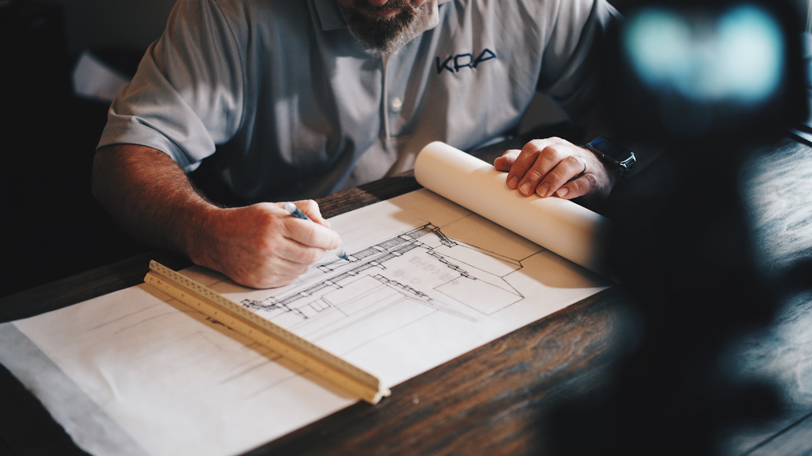
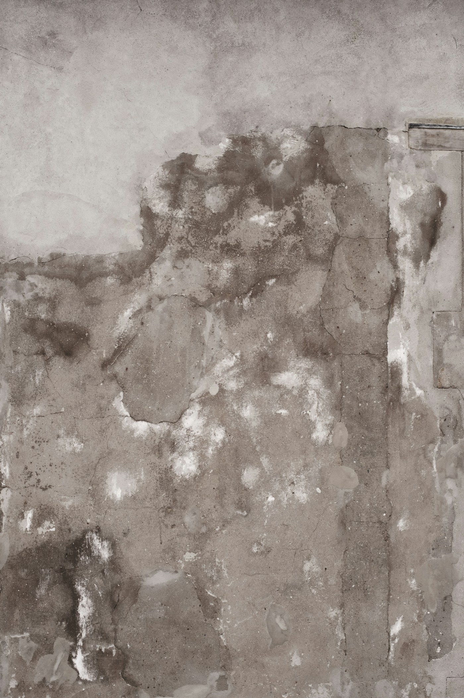
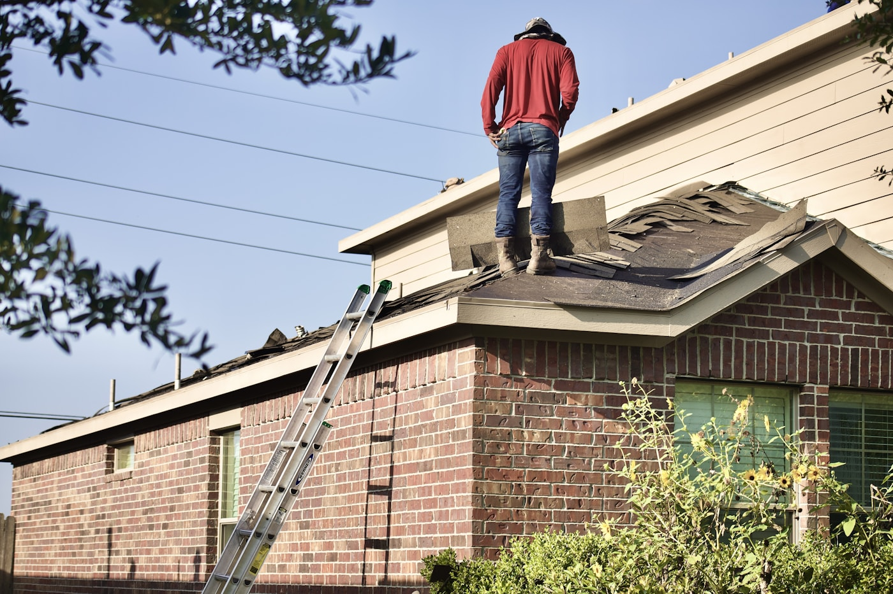
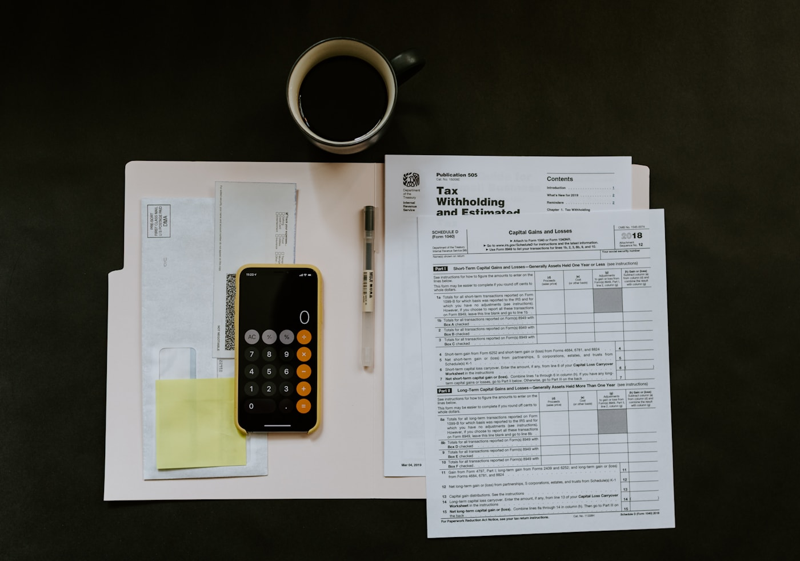

מדריכים וטיפים
בלוג בדק בית
מדריכים מקצועיים שיעזרו לכם להיערך נכון לפני רכישת נכס, מסירה או שיפוץ.
בדק בית לפני קניית דירה יד שנייה: המדריך המלא
מה בודקים, מתי מזמינים ולמה בדיקה מקצועית עשויה לחסוך הפתעות יקרות.
לקריאת המדריך ←בדק בית לדירה חדשה מקבלן: מה חשוב לבדוק במסירה
כך מתכוננים למסירה ומזהים ליקויים לפני הכניסה לדירה חדשה.
לקריאת המדריך ←
ליקויי בנייה נפוצים בדירות חדשות ואיך מזהים אותם
רטיבות, איטום, ריצוף, חלונות ומערכות. אלו נקודות שכדאי להכיר.
לקריאת המדריך ←בדק בית לפני מסירת דירה: צ׳קליסט לקונים
רשימת הכנה מעשית לביקור בדירה ולתיעוד מסודר של הממצאים.
לקריאת המדריך ←
בדיקת רטיבות בדירה: סימנים, גורמים ופתרונות
איך מזהים בעיה, מדוע חשוב לאתר את מקורה ומה עושים בהמשך.
לקריאת המדריך ←בדק בית לדירת יד שנייה: מה בודקים ולמה זה חוסך כסף
הממצאים שיכולים לסייע בקבלת החלטה ובהיערכות נכונה לעסקה.
לקריאת המדריך ←
כמה עולה בדק בית ומה משפיע על המחיר?
הגורמים שקובעים את היקף הבדיקה, ומה חשוב לוודא לפני הזמנה.
לקריאת המדריך ←תקני בנייה בדירה חדשה: מה קונה דירה צריך לדעת
היכרות בסיסית עם תקנים, סבילויות ותיעוד ליקויים מול הקבלן.
לקריאת המדריך ←
בדיקת איטום גג ומרפסת לפני החורף
הסימנים שעשויים להעיד על כשל באיטום והזמן הנכון לבדיקה.
לקריאת המדריך ←
איך לקרוא דוח בדק בית ולפעול מול הקבלן
כך מתעדפים את הממצאים, מתעדים אותם ומתקדמים לתיקון.
לקריאת המדריך ←